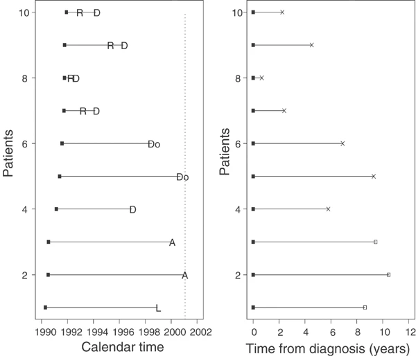

library(survival) # key package for survival analysis
library(ggsurvfit) # nicer survival graphics
library(tidyverse) # data wrangling
library(broom) # tidy model outputs1 Introduction
1.1 Setup
Load the required packages
1.2 What is Survival Analysis?
Survival analysis involves analysing time-to-event data. This may be survival of a patient, but it may also be applied to any data where we have measured the time taken to record an event, such as machine failure, customer churn etc.
This combines two things:
- An event/non-event indicator and;
- The time taken for the event to occur/not occur.
A common task is analysing binary outcome data for events (yes/no, 0/1 etc). There are a range of popular methods for this task. What they all have in common, is that we are definitively classifying each subject into one class or another - so in effect, all subjects have concluded their follow up period. This doesn’t help us understand the probability of these events over time. It also doesn’t help us if subjects drop-off (a real-world issue).
Conversely, we can analyse times as a continuous value, just like any other continuous, positive value. However we can’t just analyse the event times. We also need to measure the times when subjects were lost to follow up. Why? If we don’t we are biasing our estimates by removing subjects who haven’t yet experienced an event. We can’t understand how long things survive by analysing only those who die.
So we need a way of combining a binary event data and continuous time data.
| id | time | status |
|---|---|---|
| 1 | 5 | 1 |
| 2 | 10 | 0 |
| 3 | 13 | 1 |
| 4 | 18 | 1 |
| 5 | 20 | 0 |
1.3 Dealing with events
Typically an event is encoded as a binary status indicator variable where the status indicator, normally 0 = alive, 1 = dead. Other choices are TRUE/FALSE (TRUE = death) or 1 = alive, 2 = dead.
Useless Fact
The use of 1/2 for alive/dead instead of the usual 0/1 is a historical footnote. For data contained on punch cards, IBM 360 Fortran treated blank as a zero, which led to a policy within the section of Biostatistics to never use “0” as a data value since one could not distinguish it from a missing value. The policy became a habit, as is often the case; and the 1/2 coding endured long beyond the demise of punch cards and Fortran.
While some subjects will experience an event, for other subjects, their survival times will be unknown. This can occur if a study concludes and some subjects have not yet recorded an event. Alternatively some subjects may drop out and be lost to follow up.
We still need a way to record the time when they didn’t experience the event - which is a weird thing to think about.
For example, A trial follows 200 patients for 5 years to see how long they survive after starting a new cancer drug. When the study ends, some patients are still alive. For those patients, you know they survived at least 5 years, but you don’t know their actual survival time. It could be 5.1 years or 20 years.
This is known as censoring. The most common form is right censoring (as above). There is also left censoring and interval censoring (these are beyond the scope of the workshop).
So, our event indicator is actually event = 1, censored = 0.
Exercise: Classroom Discussion
How should we handle censoring?
a) Pretend censored times are events.
We know the event hasn’t occurred. It might still occur, but the event time will be longer then the censoring time, so it will bias the results.
b) Drop censored observations from the analysis.
Keeping only subjects who experienced the event will understate survival estimates as we don’t incorporate those at risk who haven’t (and don’t) experience the event.
c) Analyse the outcomes as binary events.
This is essentially what logistic regression does. It assumes the negative class explicitly states the event did not occur. This is fine if there is a consistent and definitive follow up period. But in many cases we have varying follow up times. Someone who just enrolled in a clinical trial has had less exposure. This will bias events occurring to those with longer follow up times.
d) Use survival analysis
The methods we will learn allow us to measure and model survival times, while accounting for censoring in our dataset.
1.3.1 Dealing with times
Where does the time variable come from? Often we have staggered start times or deal with cohorts. Survival analysis typically is performed with a consistent follow up time. Below is an example of how we might create this time variable from dates.

How can we do this in R? Below is a made-up example.
time_raw# A tibble: 10 × 3
date_start date_end event
<date> <date> <dbl>
1 1990-01-09 1990-01-11 1
2 1990-01-25 1990-01-31 1
3 1990-02-16 1990-02-26 1
4 1990-01-31 1990-02-25 1
5 1990-01-24 1990-02-10 1
6 1990-01-04 1990-01-13 1
7 1990-02-06 1990-02-22 1
8 1990-01-02 1990-01-21 0
9 1990-02-28 1990-03-10 0
10 1990-01-11 1990-01-20 0
The
{lubridate} package
The {lubridate} package in R can help work with dates. We can use interval() to calculate the exact difference between two dates. Expressing this in some units can be done using either Durations or Periods. Durations are consistent mathematically, however Periods may map onto our intuition of the date-time line a little better. See here: https://lubridate.tidyverse.org/articles/lubridate.html#arithmetic-with-date-times
time_raw |>
mutate(
time = interval(date_start, date_end) / ddays(1)
) |>
select(time, event)# A tibble: 10 × 2
time event
<dbl> <dbl>
1 2 1
2 6 1
3 10 1
4 25 1
5 17 1
6 9 1
7 16 1
8 19 0
9 10 0
10 9 01.4 Example Datasets
The {survival} package has many build in datasets for use.
data(package = "survival")1.4.1 Acute Myelogenous Leukemia survival data
Survival in patients with Acute Myelogenous Leukemia. The question at the time was whether the standard course of chemotherapy should be extended (‘maintainance’) for additional cycles.
head(aml) time status x
1 9 1 Maintained
2 13 1 Maintained
3 13 0 Maintained
4 18 1 Maintained
5 23 1 Maintained
6 28 0 Maintained| Variable | Description |
|---|---|
| time | Survival or censoring time |
| status | Censoring status |
| x | Maintenance chemotherapy given? (factor) |
source: Rupert G. Miller (1997), Survival Analysis. John Wiley & Sons. ISBN: 0-471-25218-2.
1.4.2 NCCTG Lung Cancer Data
Survival in patients with advanced lung cancer from the North Central Cancer Treatment Group. Performance scores rate how well the patient can perform usual daily activities.
head(lung) inst time status age sex ph.ecog ph.karno pat.karno meal.cal wt.loss
1 3 306 2 74 1 1 90 100 1175 NA
2 3 455 2 68 1 0 90 90 1225 15
3 3 1010 1 56 1 0 90 90 NA 15
4 5 210 2 57 1 1 90 60 1150 11
5 1 883 2 60 1 0 100 90 NA 0
6 12 1022 1 74 1 1 50 80 513 0| Variable | Description |
|---|---|
inst |
Institution code |
time |
Survival time in days |
status |
Censoring status (1 = censored, 2 = dead) |
age |
Age in years |
sex |
Sex (1 = Male, 2 = Female) |
ph.ecog |
ECOG performance score rated by physician (0 = asymptomatic, 1 = symptomatic but ambulatory, 2 = in bed <50% of day, 3 = in bed >50% of day but not bedbound, 4 = bedbound) |
ph.karno |
Karnofsky performance score rated by physician (0 = bad, 100 = good) |
pat.karno |
Karnofsky performance score rated by patient (0 = bad, 100 = good) |
meal.cal |
Calories consumed at meals |
wt.loss |
Weight loss in last six months (pounds) |
source: Loprinzi CL. Laurie JA. Wieand HS. Krook JE. Novotny PJ. Kugler JW. Bartel J. Law M. Bateman M. Klatt NE. et al. Prospective evaluation of prognostic variables from patient-completed questionnaires. North Central Cancer Treatment Group. Journal of Clinical Oncology. 12(3):601-7, 1994.
1.4.3 Stanford Heart Transplant data
Survival of patients on the waiting list for the Stanford heart transplant program.
head(heart) start stop event age year surgery transplant id
1 0 50 1 -17.155373 0.1232033 0 0 1
2 0 6 1 3.835729 0.2546201 0 0 2
3 0 1 0 6.297057 0.2655715 0 0 3
4 1 16 1 6.297057 0.2655715 0 1 3
5 0 36 0 -7.737166 0.4900753 0 0 4
6 36 39 1 -7.737166 0.4900753 0 1 4| Variable | Description |
|---|---|
| age | Age − 48 years |
| year | Year of acceptance (years after 1 Nov 1967) |
| surgery | Prior bypass surgery (1 = yes) |
| transplant | Received transplant (1 = yes) |
| id | Patient ID |
Source: J Crowley and M Hu (1977), Covariance analysis of heart transplant survival data. Journal of the American Statistical Association, 72, 27–36.